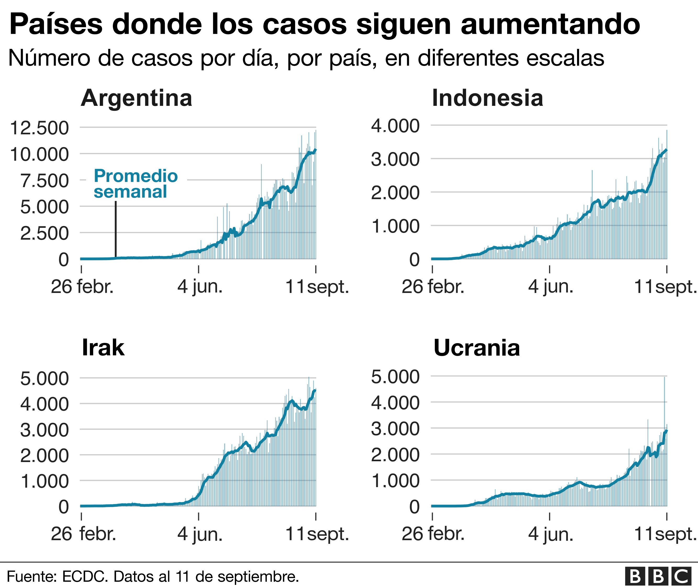

EjemplosdeFakeNews
| Internet | Páginas web | Twitch |
| Comunidades digitales. | E-games que ganan jugadores. | El ocio llevado al terreno online. | . Trump y el asalto al Capitolio | Noticias de vacunas | Fake news de confinamiento |
En época de pandemia
Un arma silenciosa en tiempos de pandemia.La pandemia del COVID 19 tiene una particularidad que la distingue de cualquier otra crisis sanitaria que haya azotado al mundo en el pasado. La diferencia es el rol que juegan las redes sociales y el impacto que ellas generan en las personas . Potentes plataformas digitales capaces de viralizar en segundos hacen argumentos falsos que amenazan a la población, en cuanto las personas validan como ciertos datos que, en realidad, nadie corroboró.
Al compartirlos casi de manera automática, con un simple clic, se alimenta la red de engaño y se nutre una trama desinformativa de contenidos no verificados altamente peligrosa para la población mundial.
>La viralización de estas piezas pone en riesgo la seguridad de las personas que deciden cómo actuar frente al coronavirus en función de argumentos incorrectos y en muchos casos, falsos.
La solidaridad y el cuidado de los demás, no significa, solamente, cumplir con las normas de sanitarias sugeridas por las autoridades de cada país.
La responsabilidad cívica y la garantía al acceso a la información supone, para UNESCO, cuidar la información de calidad.
La UNESCO, como organización promotora de la libertad de expresión y el acceso a la información de calidad y basada en evidencia, en alianza con el PNUD, lanza una serie de contenidos digitales, con recomendaciones para que los ciudadanos verifiquen los contenidos que vienen consumiendo durante la pandemia.
promotora de la libertad de expresión y el acceso a la información de calidad y basada en evidencia, en alianza con el PNUD, lanza una serie de contenidos digitales, con recomendaciones para que los ciudadanos verifiquen los contenidos que vienen consumiendo durante la pandemia.
En el Perú
La desinformación en redes sociales es un problema que afecta a muchos países, incluido Perú . La propagación de información falsa o engañosa a través de plataformas de redes sociales puede tener graves consecuencias, ya que puede influir en la opinión pública, crear división y confusión, y socavar la confianza en las instituciones y en la información verídica. Algunos de los temas que han sido objeto de desinformación en Perú incluyen asuntos políticos, temas de salud , elecciones, y más . La desinformación puede difundirse rápidamente a través de las redes sociales debido a la facilidad con la que la información se comparte y se viraliza en estas plataformas.desinformación, implementando políticas y medidas para combatirla y promoviendo la alfabetización mediática
.© 2023 Lara.